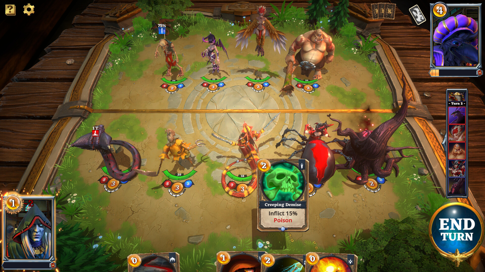
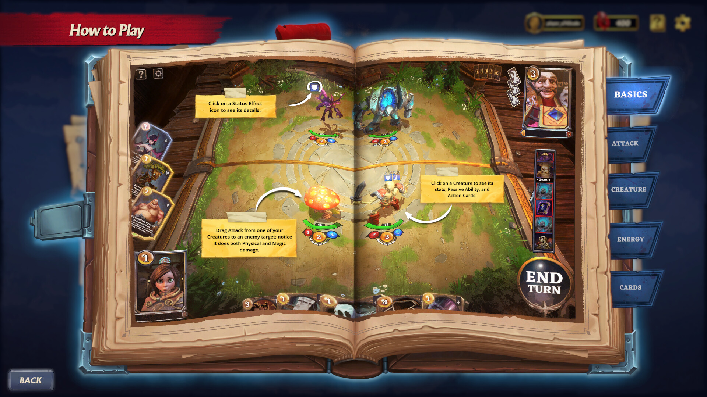

Legends Reborn: Age of Chance
Legends Reborn: Age of Chance is an NFT-based collectible card game made by Kung Fu Factory during my time at Max Gaming Studios. Assisted with feature development including UI, gameplay enhancements, and client/server improvements, as well as bug fixing.
Steam